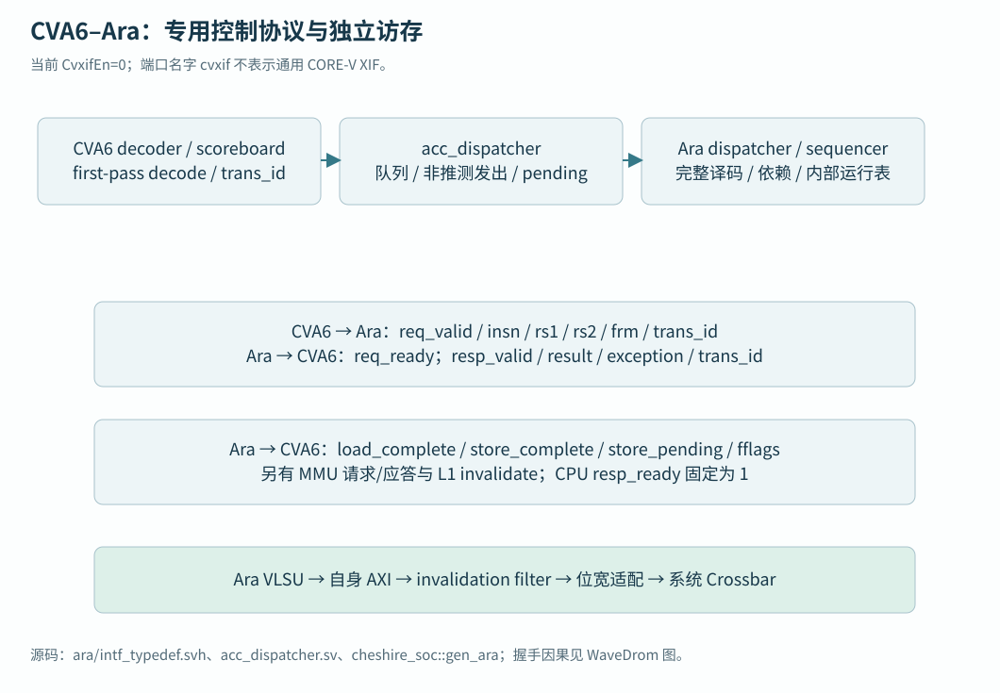
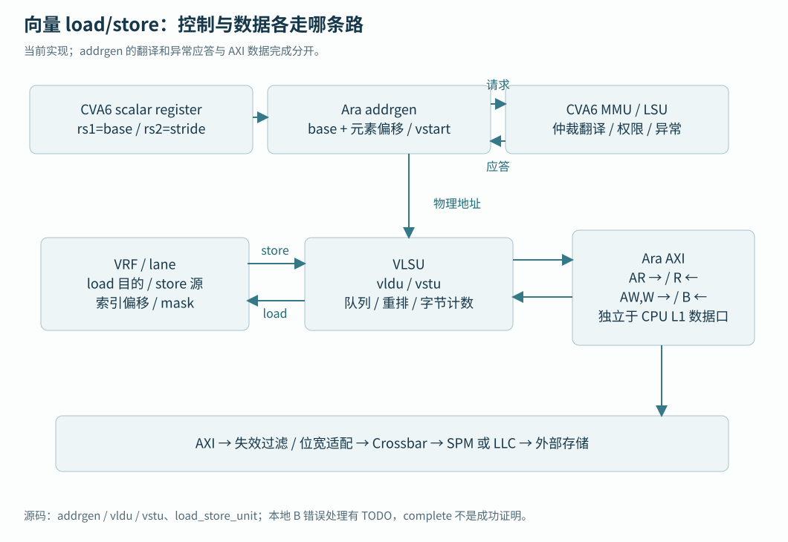
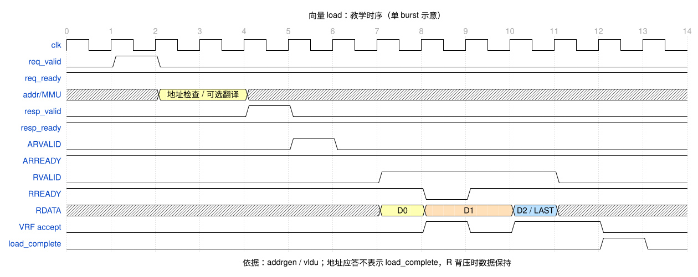

UNDERSTAND · TRACE · BUILD · VERIFY
13 · Ara 向量计算
让同一数组任务沿独立向量通路执行并得到可核验的结果。
上一章已经明确共享缓冲区和存储路径。本章把原来的 137 元素任务交给 Ara，解释向量状态、lane 与独立访存；最后把静态指令、动态执行和结果校验组合成实验 E 的判据。
同一任务的两种表达
标量阶段逐元素计算 3*i+1。向量阶段准备 a[i]=i、b[i]=2*i+1，再执行 c=a+b，结果仍为 3*i+1。输入、长度和独立期望保持一致，便于把差异集中在执行与数据通路。主文件仍为 journey.c；先用 rvv_add.S，随后在同一调用边界增加归约和两种 C 编程入口。
本地组合中 CPU 先译码并发出向量操作，Ara dispatcher 接收指令、标量操作数及状态，sequencer 跟踪依赖并分派工作。每条 lane 保存向量寄存器的一部分并执行运算，mask/slide 处理掩码与跨 lane 重排，VLSU（向量访存单元）产生独立 AXI 数据请求。CPU 与 Ara 还通过专用通路协作地址翻译、提交和异常。
从数组位置理解 vtype、寄存器分组与 mask
VLEN 是每个向量寄存器可保存的位数，ELEN 是实现支持的最大元素位宽。本地分别为 2048 与 64。把寄存器当作一排储物格：SEW=32 时，每格装一个 32 位元素，m1 单个寄存器放 64 个；SEW=64 时放 32 个。LMUL 把寄存器组合成更大或更小的逻辑组：m2 以两个连续寄存器保存 128 个 e32 元素，目的基号需满足分组对齐；mf2 只使用对应的一部分容量。
vtype 编码 SEW、LMUL、尾部与 mask 策略；vsetvli 根据所需剩余数和该配置选择 vl，vl ≤ VLMAX=LMUL×VLEN/SEW。本地 137 项 e32,m1 通常分成 64、64、9，但程序只按返回 vl 更新指针。增加 LMUL 占用更多寄存器，可能减少可同时保存的操作数；增加 lane 改变物理并行资源，既不改变这套软件循环语义，也不等于每周期完成 vl 个元素。
mask 是每个元素是否参与本次操作的布尔位，通常放在 v0；带 v0.t 的指令只处理允许的活动元素。tail 是 i≥vl 的位置。ta/ma 表示允许尾部/掩码关闭位置的目的内容变成规范允许的不确定值，tu/mu 要保留对应旧目的值，可能增加读旧值和重排成本。后续要使用的元素必须有定义，不能把 agnostic 元素读回当成算法结果。本例不使用 mask，并在内存有效区之后放守卫；守卫验证越界写，不能代替 mask 语义测试。
| 访问方式 | 数组直观模型 | 本地实现与适用边界 |
|---|---|---|
| 连续 vle/vse | base+i×元素字节数 | 主线采用；有机会合成 INCR burst，对齐和页边界仍需检查 |
| 跨步 vlse/vsse | base+i×stride，stride 单位是字节 | FUNCTIONALITIES 与 addrgen 有实现；小步长/负步长/非连续地址要分别验证 |
| 索引 vluxei/vloxei、vsuxei/vsoxei | base+索引向量中的字节偏移 | 索引 EEW 与数据 SEW 可不同；有序/无序语义由编码区分，本地 vstart 限制仍需核对 |
| segment / fault-only-first / whole-register | 结构体字段拆分、容错扫描或整寄存器搬运 | 本地有相关实现与条件检查；不把功能清单当成所有组合动态通过 |
整数运算先明确位宽和溢出规则：本例 uint32_t 加法和归约按 2³² 取模。vredsum.vs 把一组元素与种子元素归约成目的寄存器的元素 0；跨多轮时需要把每轮部分和正确累计。浮点 vfadd/vfmacc 和 vfredosum/vfredusum 使用浮点状态、舍入与异常标志；顺序变化会改变舍入误差。浮点验收应使用独立较高精度参考、明确 abs/rel 容差、NaN/Inf 策略及输入范围，不照搬整数完全相等判据。
从 CPU 译码到 Ara 请求
以 vadd.vv v2,v0,v1 为例，CVA6 取得 32 位编码后，在 decoder 的加速器分支调用 Ara 提供的 cva6_accel_first_pass_decoder。这一步识别向量操作、标量源/目的寄存器、load/store 类别，并检查 VS；涉及向量浮点还检查 FS。它把功能单元标为 ACCEL，把原始指令保留下来，完整的向量合法性检查交给 Ara dispatcher。初译码能认出某类编码，尚不能证明 Ara 实现该操作的全部变体。
CVA6 读出需要的标量操作数并维护 scoreboard，即记录未完成指令及其依赖的表。acc_dispatcher 有深度 3 的指令队列和后续 spill register；队列满附近会停止接收新的加速器指令。指令只有到达可非推测发出的提交边界，才通过请求寄存器送给 Ara。这防止一条后来会被分支冲刷的指令提前改变向量状态；变量名 acc_commit 在这里表达“允许非推测发出”，应与最终 commit_ack 区分。

请求结构的 insn 携带编码，rs1/rs2 携带实际标量值，frm 携带浮点舍入模式，trans_id 关联 CPU scoreboard 项。req_valid 与 req_ready 同时成立才接受请求；等待期间请求保持稳定。应答携带 resp_valid、同一个 trans_id、result 和 exception；CPU 本地把 resp_ready 固定为 1。无标量目的寄存器的 vadd.vv 不把整个向量结果装进 result；它的目的数据写入 Ara VRF。vsetvli 的实际 vl、vmv.x.s 或浮点标量传送才需要相应的标量返回值。
当前接口还携带 store_pending、load_complete/store_complete、fflags 和失效通知，外层结构另有 acc_mmu_req/resp 及翻译使能。gen_cva6_cfg 明确 CvxifEn=0，由 RVV 派生 EnableAccelerator；SoC 将这些自定义结构传给名为 cvxif_req/resp 的端口，消费者是专用 acc_dispatcher 和 Ara。通用 CORE-V XIF 的 issue/commit/result 协议及适配能力不能从这个端口名推出。新增 NPU 通常先走系统控制/数据接口，而非把它接到这里冒充另一种 Ara。
接受、应答、提交与运算完成
合法算术指令经 Ara 解码、后端具备接收条件后可以很快应答 CVA6；此时 lane 可能仍在分批运算。CPU 以应答更新 scoreboard，按程序顺序提交，随后可推进无依赖的标量工作。Ara sequencer 为内部指令分配运行标识，记录各处理单元的 vinsn_running 和寄存器读写依赖；后继向量消费者必须等待所需结果，而不是依赖 CPU 已提交这一事实。

带标量返回值的向量指令，要等返回值准备好才应答。load/store 还需要地址生成及异常判断：ara_sequencer 的 WAIT 状态收到 addrgen_ack 后把异常或正常应答送回 dispatcher。物理地址、连续访问路径与开启翻译的路径等待条件不同；翻译开启时 addrgen 等最后一次翻译完成或异常。这个应答仍与所有数据已到 VRF、所有写响应已回收分开。
vldu 在结果队列内容被 lane 接收、该指令提交字节计数归零时产生 load_complete；vstu 按写数据/地址队列进展和 B 应答回收指令，产生 store_complete。异常终止路径也会发完成通知以回收 pending 计数。因此 complete 表示跟踪项可以结束，是否成功还要结合 exception 和结果判断。CPU 的 speculative/dispatched load/store 计数、Ara 的内部运行表和 AXI 在途队列各自管理不同层。
| CPU 遇到的条件 | 当前 acc_dispatcher 的行为 |
|---|---|
| 新的 ACCEL 指令，队列容量不足 | issue_stall 阻止继续接收 |
| 一致性模式开启，标量 load 前仍有向量 store | 等待向量 store pending 清除 |
| 一致性模式开启，标量 store 前仍有向量 load/store | 等待这些向量访存完成 |
| store barrier 已提交，Ara store_pending 仍置位 | wait_acc_store 驱动 ctrl_halt，直到存储排空 |
| 返回非法指令/翻译异常 | 按 trans_id 回到 scoreboard，经提交异常流程建立 mepc/mcause/mtval 等状态 |
当前 vstu.sv 在 B 通道处明确留下“不能处理 B 错误”的 TODO，实际直接接受 B；vldu 的数据接收也未据 RRESP 构成完整的总线错误上报闭环。官方 Ara 最新 dispatcher 文档笼统提到总线错误，而本地版本只能据具体消费者确认支持范围。应保留读写错误注入验收，不能把译码/MMU 异常通路扩大解释成任意 AXI 错误都能精确陷入。
向量地址与独立数据通路
vle32.v v0,(a0) 的 a0 值由 CPU 放入请求 rs1，addrgen 按基址、vl、元素宽度形成地址；跨步访问另取标量 stride，索引访问从 VRF 取得偏移。它把地址请求交给 CVA6 的 MMU 协作端口，load_store_unit 中的仲裁选择标量或加速器翻译，返回物理地址、DTLB 命中信息或异常。页表权限与 PMP 的作用取决于有效配置：本教程机器态主线没有建立页表，且 SoC 默认 NrPMPEntries=0，不能宣称已有 NPU/IOMMU 隔离。


AR/R 直接在 Ara 自身 AXI 上传输数据，load 数据经重排和结果缓冲写入各 lane；store 从 VRF 读取，重排成内存字节顺序，经 AW/W/B 完成。两个 lane 时 Ara AXI 为 32×2=64 位，之后仍有显式位宽转换以适配系统。向量元素不经 CPU 的标量 result 总线逐项传送，也不借 CPU L1D 作为向量数据接口。
本地 addrgen 对元素未对齐地址有拒绝分支，使用 ILLEGAL_INSTR 上报；索引访问还留有 vstart 支持限制注释。用本地实现规划测试时，应覆盖对齐、页边界、尾部、mask、故障元素和复位；不要用规范中存在某条指令来替代本版本的逐项验证。
加载—计算—存储在 Ara 内部怎样流动
dispatcher 保存 vl/vtype/vstart 等向量状态，检查编码及寄存器分组，必要时发起元素宽度重排。sequencer 追踪寄存器读写冲突、功能单元队列和在途指令。每条 lane 包含 VRF 分片、操作数请求/队列、整数与乘除/浮点资源；masku 向各单元提供每元素使能，sldu 处理跨 lane 数据移动及部分归约协作，VLSU 包含 addrgen、vldu、vstu。

以两 lane、e32、vl=4 为小例子，内存中 a[0..3] 连续排列；load 后，元素 0/2 放到 lane0 的两个 32 位位置，1/3 放到 lane1。vadd.vv 分别读取相同 lane 的 a/b 分片，结果写回目的向量寄存器；store 再组合成 c[0],c[1],c[2],c[3] 的自然内存顺序。更窄元素需要字节 shuffle，变化 EEW 时还可能需要 reshuffle；软件依赖架构元素顺序，不依赖物理 bank 地址。
VRF 是由指令显式寻址的 32 个架构寄存器，当前共 8 KiB，每 lane 分摊 4 KiB。其 bank 冲突、操作数 FIFO、load 结果队列和 store 队列会造成背压。这些临时存储不提供按主存地址查 tag 的通用数据缓存。在当前 ara.sv → vlsu → AXI 的路径中没有独立 Ara 数据 cache；CPU L1、LLC、LLC 的 SPM ways 与外部 DDR 各有不同地址、容量及一致性责任。未来 NPU 无法凭同在片上就直接访问 Ara VRF。
CPU 队列、非推测发射、pending 与 barrier；初译码与 VS/FS；专用接口字段；内部运行表与地址应答；地址/翻译/对齐限制；load 完成；store 完成和 B 错误缺口；MMU 与保护消费者
配置到运行许可
沿第 02 章组合核对 RVV profile、真实 decoder、Ara 实例和 2 lanes / VLEN=2048。Ara 的 32 个架构向量寄存器共有 8 KiB 数据，分摊到两条 lane；lane 数改变并行实现，VLEN 改变每个寄存器容量。内存、依赖和功能单元延迟共同决定耗时，增加 lane 不直接给出应用加速倍数。
软件 C/CRT/库继续按标量 ISA 编译并关闭自动向量化，只有 rvv_add.S 使用 rv64gcv_zifencei。main 先以标量 CSR 指令使 mstatus.VS 非 Off，再调用 learn_vadd。这保证初始化前缀不会先遇到编译器生成的向量指令。当前整数向量例不需要向量浮点，原 crt0 仍负责 FS 初始化。
vl 决定每轮处理多少元素
SEW 是选择的元素位宽，LMUL 表示组合的向量寄存器组大小。e32,m1 在 VLEN=2048 时最多容纳 64 个元素，称为 VLMAX。vl 是本条指令实际处理的元素数；vsetvli 根据剩余元素数和硬件能力选择 vl，并将实际值返回给标量寄存器。
vsetvli t0, a3, e32, m1, ta, ma
vle32.v v0, (a0)
vle32.v v1, (a1)
vadd.vv v2, v0, v1
vse32.v v2, (a2)
sub a3, a3, t0
slli t1, t0, 2
# a0/a1/a2 均增加 t1，剩余 a3 非零时继续a3 是剩余元素，a0/a1/a2 是数组指针，t0 接住实际 vl。地址增加 vl×4 字节，避免把元素数错当字节数。ta/ma 允许尾部和掩码非活动元素不保留，本程序只检查有效元素。137 必须多轮执行，最后有尾部；当剩余长度落在 VLMAX 与 2×VLMAX 之间时，程序也不依赖某个唯一分块序列。

三种编程入口与当前工具链
手写汇编最直接表达每条指令，本例 rvv_add.S 用标量 ABI 传指针/长度，在独立函数里设置 vl。内联汇编还必须正确声明输入输出、修改的寄存器和 memory clobber；遗漏声明会导致优化器跨越真实依赖。对初学者，本书保留独立汇编函数作为可逐条对照的基线。
intrinsics 是编译器提供的带类型 C 接口，例如 vuint32m1_t 对应 e32/m1 的一组值，__riscv_vle32_v_u32m1 显式加载，__riscv_vadd_vv_u32m1 运算，__riscv_vse32_v_u32m1 存储。完整可构建内核每轮接收实际 vl，再推进三个指针；归约使用 __riscv_vredsum_vs_u32m1_u32m1 和标量取出函数。本轮用实际 GCC 15.2.0 编译核对名称及反汇编，不把网上其他版本 API 直接当作本地事实。
GCC 15.2 固定版本手册仍写 intrinsic 0.11，而当前在线主版本页面写 ratified 1.0；版本标签与手册文字存在演进差异。因此本轮同时记录头文件宏、工具版本、编译命令与产物，API 可用性以实际探针为准。相关 API 和 ISA 规范是两种不同版本，不能把 intrinsic 版本当成硬件 V 版本。
自动向量化从普通 C 循环推导并行性。自动向量化内核用 restrict 承诺三个数组不重叠，独立编译为 -O3 -ftree-vectorize，并保留向量化诊断。restrict 需要调用者实际保证；违反时是 C 语义错误。编译器可以因为依赖、成本或目标选项保留标量代码，实际 dump 才回答它选择了什么。本轮用 -fno-vect-cost-model 做教学探针，不作为性能最优设置。
main、crt0、库和参考校验保持标量编译，只有内核对象启用 V。这样第一条向量指令位于 VS 初始化之后，参考循环也不被自动变成同一套向量路径。FP32 intrinsic 另有只编译探针 rvv_fp_probe.c；其成功只说明工具可产生 vfadd，硬件 FPUSupport、VS/FS、数值与异常仍需目标验证。配置组合查第 02 章，各入口精确命令集中在实验 E 扩展。
本轮三种整数入口和 FP32 编译探针均通过；完整指令清单及本地宏记录见构建报告。这些产物还需要按实验 E 的扩展步骤完成真实目标执行、数值与性能分层验收。术语与规范版本见官方来源说明。
Ara 写入与 CPU 观察
Ara 写路径通过 axi_inval_filter 向 CVA6 L1D 发失效通知，受 acc_cons_en 控制，并根据实际 L1 行宽处理。此组合的 CvxifEn=0，端口中的 cvxif 名字承载专用 accelerator 协作，不能据名当作任意 NPU 通用插槽。其他 DMA 发起者没有自动加入这条 Ara 路径。
实验 E 使用上一章的独占非缓存 SPM 缓冲，不混用低别名，并在提交前后排序。它要求单核，并检查 LLC_SIZE=131072，三个槽各有一个尾部守卫，计算后把 c 的有效元素复制到全局 result，继续使用相同公式和总和校验。全 SPM way、栈边界与独占条件仍需由启动和布局保证，运行时读容量只覆盖其中一部分。
构建、执行与结果的三层证据
第一层是静态证据：rvv_add.o 的属性和最终 dump 中出现 vsetvli、vle32.v、vadd.vv、vse32.v。第二层是动态执行：PC/退休记录走到 learn_vadd，Ara 指令握手和访存与之对应，没有非法指令 trap。第三层是结果：137 项与独立期望一致、守卫未变、errors=0 且返回 0；注错版本必须失败。
这三层分别回答“文件里有什么”“硬件实际执行什么”“执行结果是否正确”。实验 E 的命令集中在实验手册。当前本轮只完成轻量构建和文档检查，动态层仍待目标 SoC 环境。非法指令先查 mepc 对应机器码及 RVV/VS；挂在向量访存则查地址、Ara 请求/响应和共享区；结果错误再查首个差异与所有权。
结果与性能分别建立证据
实验 E 延续 137 元素任务，新增 0、1、63、64、65、137 六种长度，交替的大整数和无符号回绕输入，以及独立公式的归约参考。零长度必须不触碰内存；64/65 暴露边界处理；最后一个有效元素与尾部守卫共同发现漏算或越界。正常与注错版本分别保留日志，check_run 的 --depth 还要求归约结果和六组检查标记。
性能分两层计时：内核区间从输入可见且状态就绪开始，到结果满足消费条件结束；端到端区间包括准备/布局转换、搬运、缓存维护、任务提交、等待与校验。用 mcycle 记录时要说明时钟配置、输入规模、冷热缓存、SPM/DDR 位置、其他 master 竞争和中断开销。先减小重复测量的噪声，再对比标量、汇编、intrinsic 和自动向量化；不能把省掉同步的短计时当作加速。
实验结果分别填四栏：静态指令证据、动态 PC/Ara/AXI 证据、数值及故障检测、性能条件。当前本轮只填第一栏与软件构建，后两类运行结论留给目标环境。下一节模型分工用这套测量方法评估收益，先在存储章建立数据交接契约。
一个完整的 Ara→NPU→Ara 候选片段
取一条小型全连接片段作为规划例：输入 X 为 1×137 的 int8，权重 W 为 137×64 的 int8，零点暂取 0，乘加输出 Y 为 1×64 的 int32；随后求 Y 的最大值或总和并按已约定的定点乘数、舍入和饱和规则产生 int8 输出。137 同时连接本章的非整倍长度处理。这里只固定教学算例，不冻结产品量化格式。
一种候选划分是 CPU 分配描述符并校验边界，Ara 将输入从应用布局整理/量化成 NPU 约定布局，NPU 做矩阵乘加，Ara 对 64 项 int32 做归约、激活或再量化，CPU 检查并交还缓冲。另一种是 Ara 独自完成整个小矩阵；第三种让 NPU 融合后处理减少一次交接。单个 137×64 小任务可能被提交/同步成本主导，无法仅凭峰值 MAC 数选择。
| 数据与工作 | 本教学例的规模 | 交接与测量关注点 |
|---|---|---|
| X / W | 137 B / 8768 B | 原始大小未含对齐、padding 与 NPU tile 布局；权重能否复用决定实际 DDR 流量 |
| Y / 输出 | 256 B / 64 B | 两次生产者切换：Ara→NPU，NPU→Ara；另有 CPU 完成回收 |
| 未融合最低数据读写示例 | 中间输入写读 274 B、权重读 8768 B、Y 写读 512 B、最终输出写 64 B，共 9618 B | 未含原始输入读取、描述符、对齐放大、cache line 与重复权重加载，不能当总线实测带宽 |
| 数值验证 | 独立 int64 累加参考再检查 int32 范围 | 最坏 137×16384=2244608 在 int32 内；量化舍入、饱和与 scale 另核对 |
/* 未来接口伪代码：尚无 NPU 驱动或寄存器地址 */
lease = acquire_buffer(layout, sizes, alignment);
ara_prepare_input(lease.input); /* 本轮仅数组/归约内核可构建 */
publish_visible(lease.input, NPU); /* 按实际缓存/拓扑契约实现 */
ticket = npu_submit(lease, shape, quant);
status = wait_bounded(ticket, deadline);
if (!status.success) quarantine_and_recover(lease, ticket);
else {
acquire_visible(lease.output, ARA);
ara_postprocess(lease.output);
publish_visible(lease.output, CPU);
verify_and_release(lease);
}可构建部分是本章数组运算、尾部与整数归约；它们尚未完成当前 SoC 动态回归。伪代码中的 npu_submit、可见性与恢复函数没有现成实现，未来规格必须定义 tensor layout、量化规则、完成码、epoch 和复位语义。完整所有权/交接时序见第 12 章，控制/数据拓扑实施计划见第 15 章。
判断此划分是否值得采用，应对相同数值标准测量 Ara-only、NPU+Ara、NPU 融合三个端到端方案，改变 batch、权重复用次数和布局转换量，记录内核/搬运/同步时间以及 DDR 实际字节。当前没有 NPU IP、驱动和性能记录，案例用于设计实验，不承诺目标模型的吞吐、容量或生态支持。
为什么循环按 vsetvli 返回值前进，而不是固定每次加 64？
vl 才是本轮实际生效的元素数。按实际值更新指针和剩余长度，才能正确处理尾部及实现允许的分块选择。